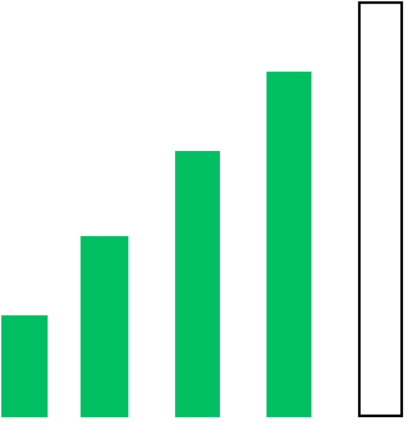

Introduction

Welcome to GitHub For The Real World, a course designed to take you from complete beginner to a website creating machine! In this course we will walk through the basics of using Github, Visual Studio Code, and Quarto for website development. If you don’t know what any of those are, that is OK. We’ll teach you! Just know this, we will collectively use those tools to develop free websites. Along the way you will pick up some fundamental HTML and CSS skills.
GitHub
GitHub is a web-based platform for storing and sharing code. It lets developers work together on projects, track changes, and control who can access the code. Think of it as a social network for code!

Visual Studio Code
Visual Studio Code (VS Code) is a free, open-source code editor for writing computer programs. It’s popular for its features like syntax highlighting, code completion, and debugging tools, making it easier and faster to write code.
Quarto
Quarto is a document creation framework that allows you to write content using familiar markdown syntax and generate various output formats like reports, presentations, websites, and more. It combines the readability of markdown with the power to programmatically generate content.
Required Experience
If you are just starting in tech you might be a little apprehensive about taking this course, don’t stress too much, that is completely normal. This course assumes that you have no technical experience with website creation, programming, or using GitHub. It does however assume that you have a basic understanding of how to navigate a computer and its file management system.
You will be well served by knowing how to find answers to your questions through a search engine like Google. Many say that the best programmers are really just the best googlers.
Some excellent websites where people post questions and answers to common programming questions are Stack Overflow and GitHub.
Required Materials
A reliable laptop or desktop computer

A strong internet connection
Consistency and the grit to set and achieve your goals
Course Outcomes
What you will know by the end
By the end of this course you should know how to build a basic, static website using Quarto and hosted for free on Github. You will know how to customize your website and how to add cool things like embedded pictures and videos, code blocks, multiple pages, and nav bars.
✅ You will know how to use Github for version control of future coding projects inside of VS code .
✅ You will know how to use Quarto to publish professional reports including websites.
What you will not know by the end
While we hope you feel you can create a custom website from scratch by the end of this course, there will still be some things you won’t be able to do by the end.
❌ You won’t be able to create a dynamic website. A dynamic website is where the contents of the site react differently to each individual user on the site. (Like facebook, google, or youtube)
❌ You won’t known the ins and outs of data science programming like data wrangling, visualizing, or machine learning. (These are saved for future courses)
Conclusion
We truly hope you enjoy this foundational course and that it serves you on your educational goals and career. This course is designed to teach you basic skills that will help you succeed. We do this through learning version control and creating static websites but with the primary intent of giving you transferable skills.
Testimonials
Reach out to J and get a word or two from him